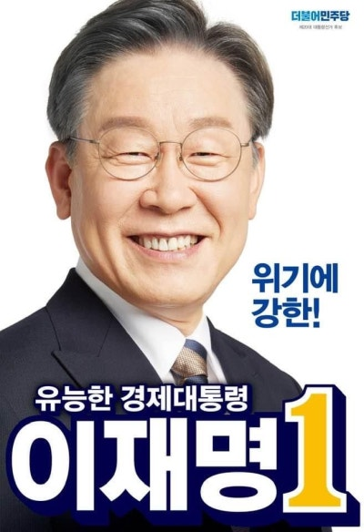

후보자 정보: 이재명 (제 20대 대통령 선거)

| 소속 정당 | 더불어민주당 |
|---|---|
| 생년월일 | 1964년 12월 22일 |
| 출신지 | 경상북도 안동시 |
| 학력 | 중앙대학교 법학과 학사 |
| 주요 경력 |
제19대 대통령 선거 문재인 캠프 정책본부장 제19·20대 경기도 성남시장 제35대 경기도지사 제20대 대통령 선거 더불어민주당 후보 |
주요 공약 및 정책
✔ 경제: 전환적 공정성장, 기본소득 도입, 지역화폐 확대
✔ 부동산: 공공주택 공급 확대, 부동산 투기 근절
✔ 복지: 아동수당 인상, 보편적 복지 확대
✔ 교육: 고교 무상교육 전면 확대, 대학 등록금 부담 완화
✔ 외교 및 안보: 남북 대화 재개, 실용 외교 지향
✔ 부동산: 공공주택 공급 확대, 부동산 투기 근절
✔ 복지: 아동수당 인상, 보편적 복지 확대
✔ 교육: 고교 무상교육 전면 확대, 대학 등록금 부담 완화
✔ 외교 및 안보: 남북 대화 재개, 실용 외교 지향
비전과 슬로건
슬로건: 위기에 강한 유능한 경제대통령
핵심 가치: 공정, 실용, 민생
핵심 가치: 공정, 실용, 민생
논란 및 이슈
✔ 대장동 개발 특혜 의혹: 공공개발 이익 환수 주장이 있었으나 특혜 논란이 제기됨
✔ 욕설 논란: 과거 가족과의 통화 녹음이 공개되어 논란
✔ 선거 전략: 적극적인 SNS 소통과 지역 밀착형 유세로 주목받음
✔ 부동산 관련 의혹: 후보자 가족의 부동산 거래와 관련된 의혹 제기
✔ 욕설 논란: 과거 가족과의 통화 녹음이 공개되어 논란
✔ 선거 전략: 적극적인 SNS 소통과 지역 밀착형 유세로 주목받음
✔ 부동산 관련 의혹: 후보자 가족의 부동산 거래와 관련된 의혹 제기